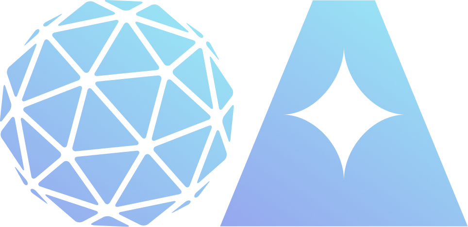
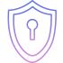
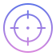
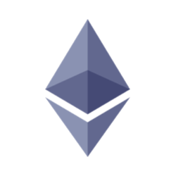
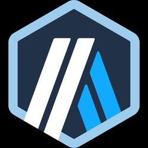
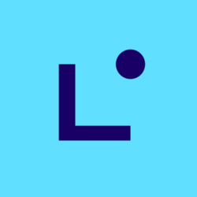
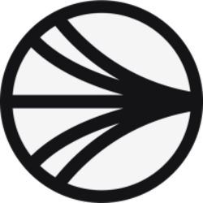
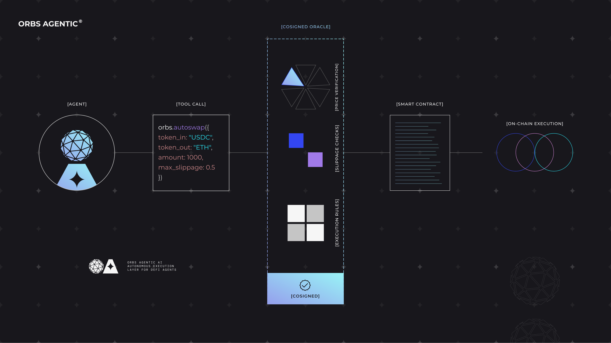

AI 에이전트와 DeFi 프로토콜 사이의 실행 레이어.
에이전트가 스왑을 하거나, 지정가 주문을 넣거나, TWAP 전략을 실행해야 할 때 오브스 에이전틱(Orbs Agentic) 툴을 호출합니다. Orbs Network가 실행, 라우팅, 공동 서명 오라클 검증을 처리하므로 모든 거래는 온체인에서 독립적으로 검증됩니다.
지갑이 아닙니다. 커스터디(수탁형) 레이어가 아닙니다. AI 트레이딩이 아닙니다. 에이전트가 DeFi를 안전하게 실행할 수 있게 해주는 검증 레이어입니다.

자율형 DeFi의 발전을 가로막는 병목 현상은 추론 능력이 아니라 신뢰, 안전성, 그리고 실행력의 문제입니다.

모든 거래는 실행 전에 독립적인 오라클이 공동 서명합니다. 에이전트가 임의로 위험한 실행을 할 수 없습니다.

DEX 전반에 걸친 스마트 라우팅과 슬리피지 보호를 제공합니다. 2022년 이후 22억불 이상의 실행 거래량을 뒷받침해온 동일한 엔진입니다.
에이전트가 직접 처리하지 않아도 되도록 재시도, 부분 체결, 네이티브 잔액 승인, RPC 실패를 처리합니다.
유연하고 조합 가능한 파라미터를 갖춘 단일 실행 도구입니다. 에이전트가 주문 구성을 정의하면 Orbs가 실행 흐름을 처리합니다.
에이전트 주도형 토큰 스왑으로, 스마트 라우팅과 슬리피지 보호를 제공합니다. 대부분의 거래에 적합한 기본 옵션입니다.
온체인 실행 보장된 지정가 주문입니다. 가격을 설정해두면 나머지는 맡겨두세요.
더 중요한 규모의 거래를 위한 추가 공동 서명 오라클 검증입니다. 실제 실행 전에 한 단계 더 점검합니다.
대규모 거래를 시간에 따라 분산해 가격 영향을 최소화합니다. 기간과 분할 방식은 직접 설정할 수 있습니다.
orbs.autoswap({
token_in: "USDC",
token_out: "ETH",
amount: 1000,
max_slippage: 0.5
})→ Routed, verified, cosigned, executed. One call.

Ethereum BSC
BSC Polygon
Polygon Avalanche
Avalanche
Arbitrum Base
Base
Linea
SonicBSCPolygonAvalancheBase모든 실행은 독립적으로 검증됩니다. 그 어떤 에이전트, 지갑 또는 운영자도 오라클 공동 서명 없이 거래를 진행시킬 수 없습니다.
중요한 것은 단지 거래가 실행될 수 있느냐가 아닙니다. 안전하게 실행될 수 있느냐입니다.

새로운 프로토콜이 아닙니다. 2022년부터 지정가 주문, TWAP, DCA 전략 전반에서 22억달러 이상의 DeFi 거래량을 처리해온, 이미 검증된 바로 그 L3 인프라입니다.
PancakeSwap, SushiSwap, THENA, QuickSwap, SpookySwap 등과 이미 통합되어 있습니다. 수십 개의 독립 검증인, 10억개 이상 스테이킹된 ORBS, 2019년부터 운영 중인 메인넷 기반입니다.
도구과 적용 패턴을 배워보세요.
단 몇 분 안에 실행 레이어에 접근할 수 있습니다.
autoswap, autolimit, TWAP - 단 한 줄의 코드면 됩니다.
Orbs Agentic은 현재 활발히 개발 중인 베타 제품입니다. 관련된 모든 디지털 자산, 블록체인 네트워크, DeFi 플랫폼은 지속적으로 변화하며 다양한 위험을 수반합니다. 사용에 따른 책임은 사용자에게 있습니다.
웹사이트 방문 경험 향상을 위해 이 홈페이지는 브라우저에서 쿠키를 사용합니다. 웹사이트를 계속 보시려면 쿠키 운영 정책에 동의해주세요.